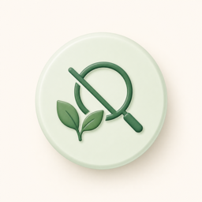
No endless logging
Skip the food database, barcode scanning, and macro math.
Private mobile habit tracker
Leafstep helps you track the days that matter, build a rhythm, and watch your weight trend follow without calorie counting, food databases, or pressure.
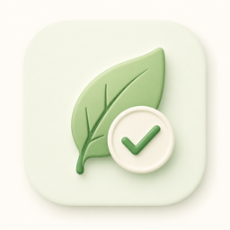
No calorie tracking We focus on consistency.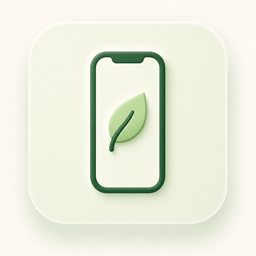
Built for mobile Your data stays with you.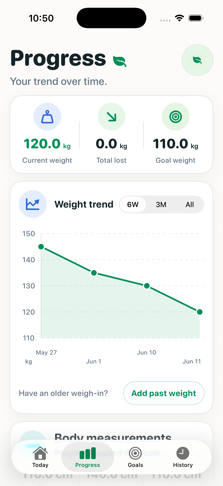
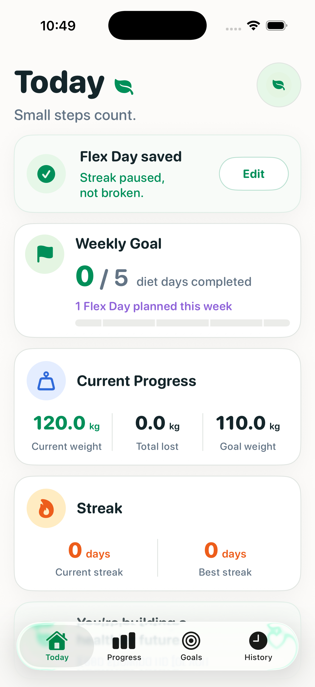
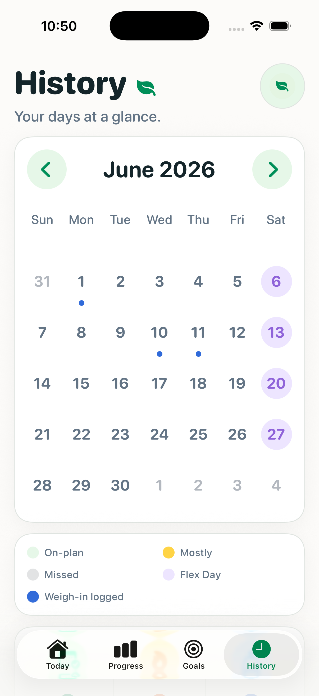

Skip the food database, barcode scanning, and macro math.
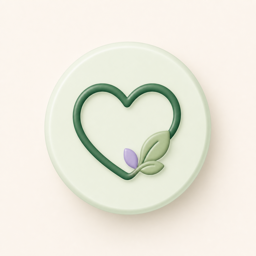
Missed days happen. Flex Days help you plan real life without breaking your rhythm.
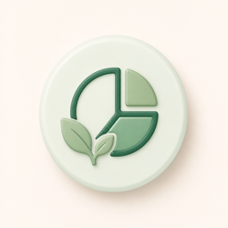
Today stays simple. Deeper trends live where they belong.
A simple rhythm for real life.
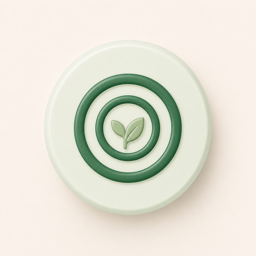
Choose diet, movement, weigh-in, and target-weight goals.
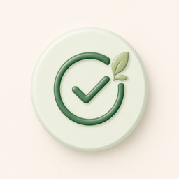
Mark your day as Yes, Mostly, No, or Flex Day. Add movement and weight only when useful.
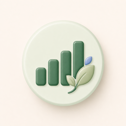
See weight trends, measurements, monthly consistency, and quiet achievement milestones.
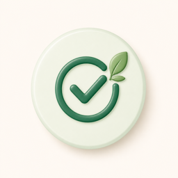
A small daily check-in that keeps your focus without overwhelming your day.
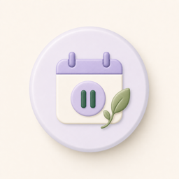
Planned breaks that pause your streak instead of punishing you.
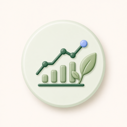
Weight trends, body measurements, and consistency in one calm place.
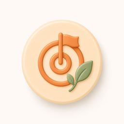
Simple weekly targets for diet, movement, weigh-ins, and target weight.
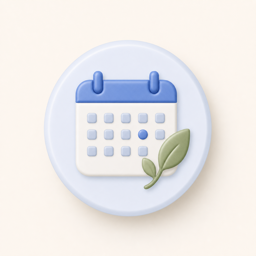
A monthly calendar that shows on-plan, mostly, missed, Flex Days, and weigh-ins.
Gentle milestones for showing up, building trends, and staying consistent over time.
Leafstep is designed to keep your progress private. No account. No social feed. No cloud dashboard. No food database. Your check-ins, goals, measurements, and achievements stay with you.
Start privately →Flex Days are built for travel, stress, rest, and imperfect weeks. They help you stay intentional without turning one missed day into a reason to stop.
No. Leafstep focuses on consistency, check-ins, weight trends, goals, measurements, Flex Days, and gentle achievements.
No. Leafstep is designed to keep your data on your device, without an account or cloud dashboard.
No. This website is informational only. Leafstep is a downloadable mobile app.
Flex Days are planned breaks that pause your streak and help you stay intentional without treating real life as failure.
No. Leafstep is a personal habit tracker, not medical advice.
Yes. Leafstep can track chest, waist, and hips over time.
Consistency today. Progress tomorrow.